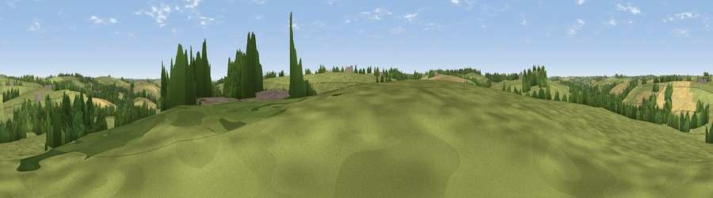

Viewpoint near Holsworthy Beacon
#44225 in England · top 98% of its area beats it · near Holsworthy BeaconThe view, rendered

A 360° render of this exact spot computed from the terrain model, tree cover and land cover — summer colours, afternoon light, calibrated against photographs of famous viewpoints. Real trees, hedges and buildings will differ in detail.
The panorama
Grey silhouette: terrain skyline in each direction (720 bearings, Earth curvature and refraction included). Dashed green: skyline with trees (+15 m) and buildings (+8 m) as obstacles. Blue strip: how far the ground is visible on each bearing.
Where the view opens
Wedge length = distance to the farthest visible ground on that bearing (vegetation-aware). Rings at 10, 25 and 50 km.
What fills the view
73% grassland · 14% cropland · 12% woodland ·
Angular shares of the visible panorama (visual magnitude), not map area. Landscape diversity 0.34 (0–1 Shannon).
Key numbers
More beautiful places nearby
The staircase of upgrades: each row has a higher view potential than everything closer. Driving times are estimates from straight-line distance, calibrated against real road routing — check an actual route before setting out.
| Place | Direction | Drive | Score |
|---|---|---|---|
| Viewpoint near Holsworthy Beacon | W · 1 km | ~3 min | 29.6 |
| Viewpoint near Thornbury | ENE · 2 km | ~5 min | 36.0 |
| Viewpoint near Newton St Petrock | NE · 3 km | ~7 min | 49.7 |
| Viewpoint near Hollacombe | S · 6 km | ~13 min | 60.3 |
| Viewpoint near Parkham | N · 10 km | ~20 min | 61.8 |
| Viewpoint near Petrockstowe | E · 11 km | ~22 min | 65.5 |
| Viewpoint near Buckland Brewer | NNE · 12 km | ~22 min | 66.6 |
| Viewpoint near Bucks Mills | NNW · 14 km | ~25 min | 79.6 |
50.86379, -4.30516 · source: screening · position refined by local search. Computed location — check access rights before visiting.